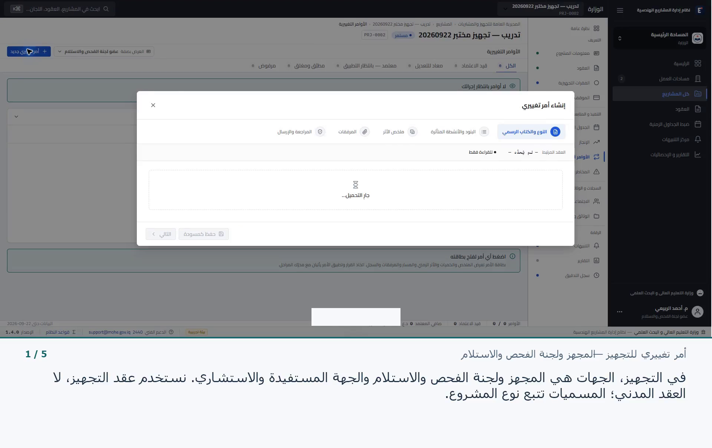

فيديو ودليل · 1:24 دقيقة
الوثائق والمخططات
البحث في مرفقات المشروع، وقراءة مصدر كل سجل، وفتح معاملته المرتبطة.
مشاهدة الدرسأربعة مقاطع تشرح التحديثات على بيانات تدريبية. لكل مقطع دليل مستقل، ونسخة سريعة وأخرى أبطأ، مع نص عربي يساعدك على تسجيل شرحك الخاص.
البحث في مرفقات المشروع، وقراءة مصدر كل سجل، وفتح معاملته المرتبطة.
مشاهدة الدرس
إدخال مقترحي المقاول ودائرة المهندس المقيم، ومقارنة الكميات والأثر المالي.
مشاهدة الدرس
مسميات المجهز ولجنة الفحص والاستلام، ومقارنة المقترحات وإغلاق النموذج.
مشاهدة الدرس
التمييز بين اكتمال بيانات الوحدة والإنجاز الفعلي وتوزيع حالات المشاريع.
مشاهدة الدرستتضمن كل فقرة تعليمات «على الشاشة» ثم «التعليق الصوتي». اقرأ التعليق فقط، واترك الأرقام ظاهرة قبل الانتقال. يمكنك تغيير العبارات بما يناسب أسلوبك، مع الحفاظ على الفرق بين المقترح والمعتمد والمطبق.
ابدأ من نص التسجيل الكاملهذه مجموعة التحديثات المسجلة في 23 أيلول 2026. أمثلة الأوامر التغييرية غير محفوظة؛ لم ينتج عنها اعتماد أو تطبيق.